【疑問】メッセージ内では、どんなことができるの？
EFFECTの項で、「文章表示」において、今まで色々な操作ができることを説明してきました。
他にメッセージ内ではどういったことができるのか、ここで見ていきましょう。
以下の項目も参照してみてください。
今まで説明してきた項目です。
【解決】こんなことができます
特殊文字を使うと、こんなことが出来ます。やり方、具体例は【詳細】で述べます。
★注意！ 特殊文字を使うときは、アルファベットの大文字・小文字が区別されます！入力時には注意しましょう！ |
| ■ ある行で使うフォントの最大サイズを決める \m[xx]を使いましょう。 その行で表示するフォントの最大サイズを決定します。 (そのフォントサイズを基準として、位置をそろえます) 使用するときは、行の先頭で使用しましょう。 その行の中で複数のフォントサイズを使っていたり、アイコンを使っていたりして、 表示がガタガタになっているときなどに有効です。 有効範囲は\m[xx]から行の終わりまでになります。 ★注意！ Ver2.02aまでは、画面サイズが320×240のときは、 サイズの異なる文字がある場合、中央揃えになってしまいます。 Ver2.10以降では、下端が揃うように変更されています。 |
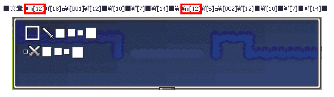 文字の並びが整えられます？ |
| ■ 文字に縁をつける \Eを使いましょう。 これより後に表示される文字に縁(エッジ)がつきます。影ができるように見えます。 (エッジの色は黒で固定、システム変数21でエッジの位置は変えられる) なお、縁を解除するときは、\Nを使います。デフォルトはこちらになります。 \Nで解除を指定しなかった場合、有効範囲は\Eから文章の終わりまでが変更されます。 部分指定したい場合は、「\E文字列\N」のように文字列を囲みます。 例えば、強調させたい箇所で使います。 タイトルの文字などはこういう装飾があるといいかもしれないですね。 |
縁がついたら目立ちます、よね？ |
| ■ 文字にアンチエイリアスをつける \A+を使いましょう。 文字にアンチエイリアスがつけられ、文字が滑らかに表示されます。 なお、アンチエイリアスを外したいときは\A-を使います。 フォントサイズが小さいときや、カクカクしたのが売りのフォントを使っているときは、 アンチエイリアスはない方が望ましいです。 \A-で解除を指定しなかった場合、有効範囲は\A+から文章の終わりまでが変更されます。 部分指定したい場合は、「\A+文字列\A-」のように文字列を囲みます。 例えば、文字のギザギザが気になった時に使います。 大きいサイズで表示するタイトル文字などは試してみるといいかもしれません。 |
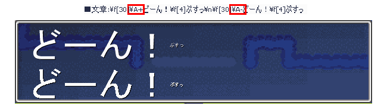 でっかい文字も自然に表示、でも小さい文字だと逆効果？ |
| ■ 文字を表示する速度を変更する \sp[xx]を使いましょう。 この後に表示される文章の表示スピードが1秒につきxx文字になります。 (システム変数9番などには影響しません) 有効範囲は\sp[xx]から文章の終わりまでです。 なお、0以下だと瞬間表示と同じ結果になります。 例えば、キャラクターにまくしたてさせたり、単語を強調させたりという、 メッセージ表示のアクセントに使えます。 あまり使いすぎると読んでいる人のペースを乱してしまいますので、 ここぞという時に使うのがおすすめです。 |
早くなったり遅くなったり この例では丸は1秒に2文字、星は瞬間に表示されます |
| ■ 文字の幅を詰める、広げる \-[xx]を使いましょう。 xxで指定したピクセルだけ、文字の幅が詰まります。 文字の幅が開き過ぎている時などに使えます。 (詰めすぎると文字が重なるなどして見辛くなります) また、xxにマイナスの値を入力すると、逆にxxピクセルだけ、文字の幅が広がります。 例えば、地の文などで飾り罫をお手軽に作成できます。 |
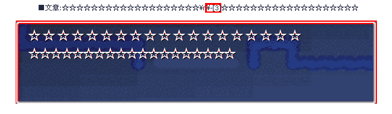 幅を詰めればこのとおり |
| ■ 文章の改行間隔を変更する \space[xx]を使いましょう。 この先の改行間隔をxxピクセルに変更します。 フォントサイズが小さいなどで、行間が開きすぎているとか言うときに使えるでしょう。 これも\-[xx]と同じく、小さくしすぎると、読みづらくなることがあります。 (マイナスにすることも可能です。やりすぎると行が重なります) 例えば、表示位置の調整を行う際に使います。また、飾り罫の作成にも使うことができます。 |
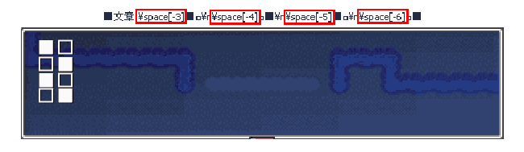 縦幅が詰まっていきます |
| ■ 表示する文字の座標を動かす \mx[xx]、\my[yy]、\ax[xx]、\ay[yy]を使いましょう。 (\ax[xx],\ay[yy]はVer2.00から追加されました) \mx[xx]、\my[yy]のときは、これ以降に表示される文字の位置を x方向にxxピクセル、y方向にyyピクセルずらします。(相対指定) \ax[xx]、\ay[yy]のときは、これ以降に表示される文字の位置を 強制的にx方向でxxピクセル、y方向でyyピクセルとします。(絶対指定) コレを使うと、一つの文字列ピクチャだけで文字を重ねて表示することもできます。 なお、コレを使った次の文字(基準の文字とする)の表示位置が、 この文字によって定められた位置に表示され、その後に続く分は、 基準の文字の後ろに普通に続きます。 また、これによる座標移動について、基準点になるのは、 システム変数1番、2番「メッセージウインドウ X座標(Y座標)」です。 (ピクチャの文章表示の場合は、そのピクチャの表示のときの基準座標となるはずです) \mx[xx]、\ax[xx]の有効範囲はこれを用いた行です。改行すると解除されます。 \my[yy]、\ay[yy]の有効範囲はこれを用いた文章です。 例えば、タイトル文字に飾り影をつけることなどができます。 やり方によっては「単語バラバラクイズ！」なんてことができますよ。 |
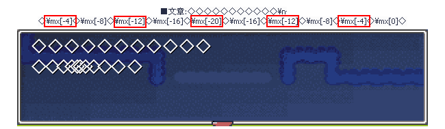 相対指定の例、文字の間隔を調整します 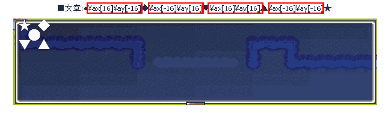 絶対指定の例、全員集合? |
| ■ 文字にルビ(振り仮名)を振る \r[「文字列」,「ルビ」]を使いましょう。 「文字列」にはルビを振りたい文字を、「ルビ」には、振りたい読み仮名を入力します。 「文字列」の上に「ルビ」で指定した文字が表示されます。 読みにくい文字で使用しましょう。 なお、ルビの色はシステムデータベース、 タイプ12「文字色」のデータ13番の色で指定されます。 例えば、小学生向けのゲームを作る時などは、漢字の読み仮名を振る必要がありますね。 大人向けのゲームでも、難しい読みの感じを使う時、通常の読み方とは違う読ませ方を したい時にはルビの出番になります。 ただし、ルビを振るよりも先に、わざわざ難しい漢字を使う必要があるのか 検討する必要はあります。プレイヤーの感覚とずれるということは、 "さめてしまう"危険があるということですから……。 |
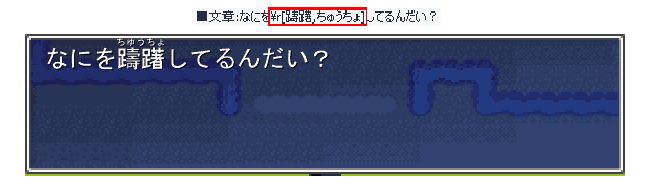 難しい文字もこれで読める なにを躊躇してるんだい？ |
| ■ 文章内にアイコンを表示する まずは「◆アイテム名にアイコンを付けたい」を参照してください。 ですが、これに似たようなことが、文章表示中でもできるのです。 \i[XXX]あるいは\img[「アドレス」]を使いましょう。 XXXは番号(000〜999)、「アドレス」は使いたい画像のアドレス(Dataより先です、画像参照)を入力します。 \i[XXX]では、「iconXXX.png」(XXXは000〜999の番号)というファイルの アイコンを文章中に表示します。 この番号のファイルがないときは何も表示しません。 \img[「アドレス」]では、使いたいアイコンのアドレスを入力すれば、 そこにある画像を文章中に表示します。 こちらのときは、アイコンの名前が「iconXXX.png」となっていなくても、 また「BasicData」フォルダに入っていなくても使えます。 但し、\i[XXX]よりも動作が重くなる可能性があります。 また、これで指定したファイルが存在しないときはエラーが出ます。 なお、アイコンの大きさによっては、文字の並びがガタガタになる可能性があります。 そのときは前述「\m[xx]」や「\my[xx]」などを使い、並びを調整するといいでしょう。 使用方法としては、i[XXX]はズバリ文章内でアイコンを表示させたいときに使いますね。 \img[「アドレス」]の方は非常に使い方の難しい効果ですが、 ギャグシーンなどでメッセージ枠内に図を示すという表現の前例があったりします。 |
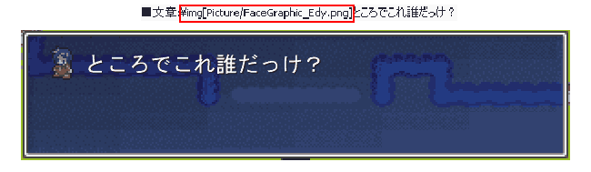 顔グラフィック画像を出してます エディの扱いってこんなもん? |
| ■ 文章を中央寄せ、右寄せで表示する それぞれ＜C＞＜R＞を使いましょう。(注意：＜＞は半角で打ちましょう。) なお、初期状態の左寄せに戻すときは＜L＞を使います。 このときに表示の基準になるのは、その文章内で最も長い行になります。 有効範囲はこれを用いた行です。 例えば、書き物に近い形の文章表示がこれで実現できます。(レポートっぽくできるはず) レポートの見出し、碑文などの表現で使うとアクセントになるはずです。 |
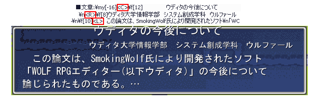 即席で作ってみたレポートもどき ウルファールさんって理系なの？ |
| ■ 文章表示中に、一定時間次の表示まで待つ \.を使いましょう。 文章表示中にこの文字まで来ると、そこで0.25秒ウェイトします。 例えば\.を4つ並べて使うと、そこで1秒待機します。 例えば、くじの当選番号を1桁ずつ発表するときとか、カウントダウンとか 何かを数える時などに使えます。 |
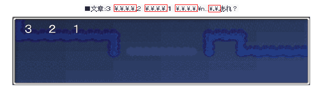 ３、２、１、…と来れば次はドカンでしょう！あれ？ |
| ■ 文章表示の途中で、表示を一時停止する \!を使いましょう。 文章表示中にこの文字までくると、そこで文章表示が一旦止まります。 その先を表示するときは、何かキーを押さないと表示されません。 (1回目に停止するまでポーズカーソルは出ませんが、その後は停止しなくても出ています) 例えば、地の文が長く続くモノローグやサウンドノベル形式の読み物では、 段落でメッセージを止めて調子を整える必要が出てきますね。 |
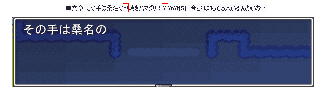 まあまあそう慌てずに これ知ってる人どんなけいるんやろ？ |
| ■ 文章を一度に表示する \>を使いましょう。 この後に来る文章が一瞬で表示されます。 文字の表示スピード(システム変数9番や、後述の\sp[xx]を使って変更)が遅いときに、 その効果はより顕著に現れます。 なお、途中までを瞬間表示させたいときは、\<を使いましょう。 \>と\<で囲まれた部分だけが瞬間表示されます。 例えば、ホラー演出にも使えたり…なんか心臓に悪そう。 |
「ワッ！！」心臓の弱い人にはやらないように！ |
| ■ キー入力を待たずに文章を消去する \^を使いましょう。 この文字まで来ると、文章表示でキーが押されたのと同じ扱いになり、すぐに文章が消えます。 但し\.などがないと、これを含む文章はすぐに消され、読めなくなります。使いどころは慎重に！ なお、上述の\>と併せると、その文章を完全にすっ飛ばすことが出来ます。 面倒な文章のスキップにも使えます。 (但し使い方を誤ると、重要なメッセージが完全にすっ飛ばされて 読めなくなることになるので要注意) 例えば、キャラクターに一気に喋らせるマシンガントークの表現ができます。 もちろん、プレイヤーがメッセージを追えない可能性が高くなる表現ですから、 重要な内容を喋っている時などはこのような表現は避けた方がよいでしょう。 |
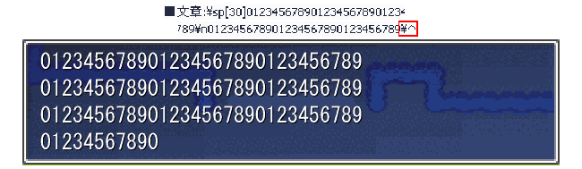 文字情報の洪水や！(まず読んでもらえない) なおこの例では最後まで表示されるとすぐにウインドウが消えます |
【補遺】こっちも読んどいてほしいなあ
| ■ おっと、そういえば特殊文字では\(￥マークあるいはバックスラッシュ)を使ってたけど… そう、\はこういった使われ方をするので、普通に打ち込んでも表示させることはできません。 この文字を使いたいときは、「\\」と、二つ並べて打ちましょう。 ★注意！ この仕様のため、ファイルのアドレスを指定するときに\を用いていると、 上手く処理されないことがあります。 そのため、アドレスを指定するときなどは 「/(スラッシュ)」を使用することが推奨されています(Ver1.16以降は特に)。 |
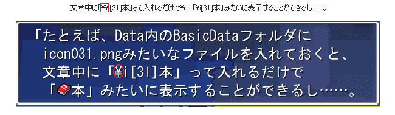 サンプルゲームより、特殊文字の説明にうってつけ |
| ■ あれ、じゃあ\nって何なの？ イベントコマンド画面を見ると、「\n」なんて文字を見かけることがありますね。 実はこれも特殊文字の一種で、改行を表します。 但し、このように文章内に打ち込んでも、改行されないので注意しましょう。 文章表示などで改行を打ち込んだとき、コマンド内で\nに置き換えられて表示されるのです。 |
これ。「\n」なんて打ち込んでも改行されません |
＜＜執筆者：ウディタ公式ガイド執筆コミュ。＞＞